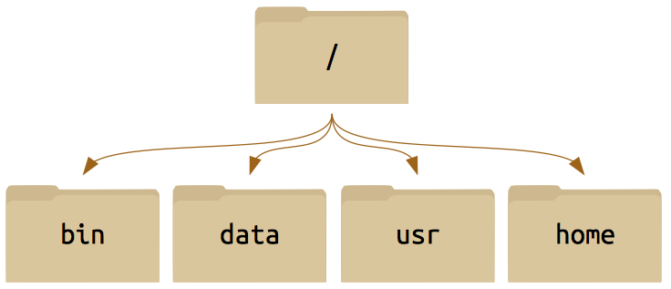

Introduction
Files and Directories
Manipulating Files and Directories
Pipes and Filters
Shell Scripts
Finding Things
A shell is a program that let’s the user interact with the operating system through a command line. While most computers have graphical user interfaces (GUI), shells only have a textual interface. The textual interface may seem cryptic at first but it can be very useful due to its high action-to-keystroke ratio, its support for automating reportetitive tasks, and it can also access networked machines. There are various shell programs out there with the most common one being Bash (Bourne Again SHell). To begin, let’s figure out which shell we are using by typing echo $SHELL in the command line:
[NetID@linux-a1 ~]$ echo $SHELL
/bin/bash
[NetID@linux-a1 ~]$echo is a command that prints a string to the terminal. In this case the shell printed the environment variable $SHELL. We can also tell the shell to print anything we like such as
[NetID@linux-a1 ~]$ echo Hello World!
Hello World!
[NetID@linux-a1 ~]$To print to the screen who the current user is type whoami and your NetID should be printed to the terminal. If you are using your personal computer then the username will be printed to the terminal.
[NetID@linux-a1 ~]$ whoami
NetID
[NetID@linux-a1 ~]$ Similarly, if we wanted to know who else was logged into the computer type who and a list of the users should print to the terminal. While this workshop will not cover every command the man will become your best friend. The man command prints to the screen the manual page for all other commands recognized by the shell. For example:
[NetID@linux-a1 ~]$ man mv
NAME
mv - move (rename) files
SYNOPSIS
mv [OPTION] ... [-T] SOURCE DEST
.
.
.This command will help you later on when you want to figure out how to use a specific command.
When moving around a linux system you will be encountered by files and directories. The linux system considers everything to be a file with directories being files that contain files. The following section will discuss how to file system is set up and how to navigate the file system.
The first thing we probably want to know is where are we within the file system. The command pwd will print the working directory. For example:
[NetID@linux-a1 ~]$ pwd
/home/NetID
[NetID@linux-a1 ~]$ It is important to note that the directory that is printed to the terminal starts with /. This refers to the root directory, or the outermost directory while everything after a / is a subdirectory. In this case the NetID is a subdirectory of home and so on.
When refering to the location of a file or directory there are two ways in which you can refernce the path to the file. The absolute path refers to a file or directory from the root directory. The relative path refers to a file or directory from the current directory.

/./. There are many other standard directories on Unix-derived systems: /usr, /bin, /opt, etc.)
And then we can drill down all the way to something that perhaps looks more familiar to you, a home directory populated with files just like you may treat the My Documents folder on Windows.

To navigate this system on the command line (as opposed to in a file browser), you only need a few basic commands: pwd ,ls ,cd.
You already learned that pwd prints the working directory. To list the contents within a directory use the ls command. For example:
[NetID@linux-a1 music]$ ls
theme.mp3 boss.mp3
[NetID@linux-a1 music]$ Often a command will take options or flags which begin with -. Type ls -l to print a long list of the contentes within a directory.
[NetID@linux-a1 music]$ ls -l
total 2
drwx------. 2 NetID ews 80 Aug 15 2015 boss.mp3
drwx------. 2 NetID ews 80 Oct 6 2015 theme.mp3
[NetID@linux-a1 music]$Other flags such as -a,-t, or -r display the same contents with some modifications (Refer to the man pages for a full list of all the flags). The -a flag will display all files including the hidden files.
[NetID@linux-a1 music]$ ls -a
. boss.mp3 theme.mp3
.. .DS_Store
[NetID@linux-a1 music]$To physically move from one directory to another you can use the cd command, as in change directory. This can be used in the following way:
[NetID@linux-a1 home]$ cd sonic
[NetID@linux-a1 sonic]$Notice that the current directory has changed. We can direct cd to a directory through an absolute path. For example:
[NetID@linux-a1 sonic]$ cd /home/sonic/music
[NetID@linux-a1 music]$A few handy shortcuts when moving around the file system:
. refers to the current directory
.. refers to the directory above the current directory
~ refers to the home directory
Tab completion will become your best friend when using a linux system. When typing a path becomes tedious you can use tab completion to auto-complete the directory or file. This becomes especially useful for long paths and filenames.
Over time you will start manipulating files and directories. This will include creating, copying, moving, removing and renaming files and directories. It is essential to have an organized file system especially when you start dealing with multiple files from multiple processes. This section will discuss the baisc simple commands necessary to manipulate files and directories.
The first basic command is mkdir. This command makes a directory in the file system. Like many other commands there are multiple flags that can be used with this command, however the basic useage is mkdir directory_name. For example:
[NetID@linux-a1 ~]$ ls
bin data usr
[NetID@linux-a1 ~]$ mkdir home
[NetID@linux-a1 ~$ ls
bin data home usr
[NetID@linux-a1 ~]$To copy a file or directory you can use the cp command. This second basic command allows the user to copy a file or directory and specify a desination. This command has the format cp source destination. For Example:
[NetID@linux-a1 ~]$ ls
bin data home usr
[NetID@linux-a1 ~]$ cp home thesis
bin data home thesis usr
[NetID@linux-a1 ~]$The next basic command is mv which easily enough stands for move. Similar to cp in this command you specify a source and a destination however unlike cp it will only keep the desitnation. For this reason mv is used to rename files. To move a file you can type the following in the command line:
[NetID@linux-a1 ~]$ ls
bin data home thesis usr
[NetID@linux-a1 ~]$ mv thesis home/
[NetID@linux-a1 ~]$ ls
bin data home usr
[NetID@linux-a1 ~]$ cd home
[NetID@linux-a1 home]$ ls
thesis
[NetID@linux-a1 home]$Notice that the directory thesis is no longer in the root directory but instead in the home directory. To rename a file you can specify the source as long as the source is not within the current directory. For example:
[NetID@linux-a1 home]$ ls
thesis
[NetID@linux-a1 home]$ mv thesis paper
[NetID@linux-a1 home]$ ls
paper
[NetID@linux-a1 home]$Finally there a few different ways to remove a file or directory. For example:
[NetID@linux-a1 sonic]$ ls
cse.txt mend.cfg music papers school thesis
[NetID@linux-a1 sonic]$ rm mend.cfg
[NetID@linux-a1 sonic]$ ls
cse.txt music papers school thesis
[NetID@linux-a1 sonic]$ rm thesis
rm: thesis: is a directory
[NetID@linux-a1 sonic]$You simplify cannot remove a directory using the rm command. It turns out that to remove a directory there are is a special rmdir command.
[NetID@linux-a1 sonic]$ rmdir thesis
[NetID@linux-a1 sonic]$ ls
cse.txt music papers school
[NetID@linux-a1 sonic]$Another option is to use the flag -d which attempts to remove directories as well as other file types. For example:
[NetID@linux-a1 sonic]$ rm -d school
[NetID@linux-a1 sonic]$ ls
cse.txt music papers
[NetID@linux-a1 sonic]$We now know how copy, move, rename, and remove a file. But what about creating a new file? There are a few different ways you can create a new file. To create a blank file you can use the touch command. For example:
[NetID@linux-a1 sonic]$ touch ae410.txt
[NetID@linux-a1 sonic]$ ls
ae410.txt cse.txt music papers
[NetID@linux-a1 sonic]$In some cases the touch command is used to update the timestamp on a file if the file already exists.
To open a new file you can use a different editors. For exmaple if I wanted to open a new file and begin editting it I could use the text editors vi vim nano among others. In this case lets use vi to open a new file called cse450.txt:
[NetID@linux-a1 sonic]$ vi cse450.txtThe cat command allows you to view but not edit a file. For example if we want to view the file cse450.txt we can:
[NetID@linux-a1 sonic]$ cat cse450.txt
This is what is inside the cse450.txt file.
[NetID@linux-a1 sonic]$Lets say that there are a lot of files that you want to copy, move, rename, or remove. We can use what are called Wildcards.
* - represents zero or more characters? - represents a single character[] - represents a range of charactersThese commands allow the user to ask for a specifc pattern or set of files and directories. For example lets say we have the following in our directory,
[NetID@linux-a1 sonic]$ ls
ae410.txt cse.txt dir5 dir37 dir40
file1.txt file2.txt music papers
[NetID@linux-a1 sonic]$And we want to know what files we have that start with the letter f we can use the * command.
[NetID@linux-a1 sonic]$ ls f*
file1.txt file2.txt
[NetID@linux-a1 sonic]$If we cant to find all files that have exactly 3 characters as an extension we can use the ? command:
[NetID@linux-a1 sonic]$ ls *.???
ae410.txt cse.txt file1.txt file2.txt
[NetID@linux-a1 sonic]$The last wildcard listed above is the [] command which can be used to specify a list of characters that you want to find. For example if you want to remove all files that start with the letter a and c you can type in the command line
[NetID@linux-a1 sonic]$ ls
ae410.txt cse.txt dir5 dir37 dir40
file1.txt file2.txt music papers
[NetID@linux-a1 sonic]$ rm [ac]*
[NetID@linux-a1 sonic]$ ls
dir5 dir37 dir40 file1.txt
file2.txt music papers
[NetID@linux-a1 sonic]$ As a reminder if there is a command that you don’t know exactly how to use or if you want to find out what the flags are reference the man pages.
When we type a command or run a program we will get an output printed to the terminal. Pipes can redirect a command or a program’s output to a file for future reference or to be used at a later time. In this section you will learn how to use the pipes and how to combine pipes into powerful single-purpose programs.
The first command to learn is >. This pipe, used as command > file redirects a command’s output to a file. For example:
[NetID@linux-a1 music]$ ls
theme.mp3 boss.mp3
[NetID@linux-a1 music]$ ls > output.txt
[NetID@linux-a1 music]$ cat output.txt
theme.mp3
boss.mp3
[NetID@linux-a1 music]$ Sometimes you run into the problem of redirection mutliple outputs to a single file. If you use the > command the original file contents will be overwritten. To append new outputs to a file you can use the command >>. For example:
[NetID@linux-a1 music]$ cat output.txt
theme.mp3
boss.mp3
[NetID@linux-a1 music]$ echo Hello! >> output.txt
[NetID@linux-a1 music]$ cat output.txt
theme.mp3
boss.mp3
Hello!
[NetID@linux-a1 music]$ If you would like to read the contents of a file to use in your command you can use the < command. In this case instead of redirecting an output to a file you are redirecting a file’s contents into the input of command. For example:
[NetID@linux-a1 music]$ rm *.mp3 < output.txt
[NetID@linux-a1 music]$ cat output.txt
Hello!
[NetID@linux-a1 music]$ Sometimes in order to combine two command line steps you can use a pipeline. That is you can use the output of one file into the input of another file using the | command. For example:
[NetID@linux-a1 sonic]$ ls
dir5 dir37 dir40 file1.txt
file2.txt music papers
[NetID@linux-a1 sonic]$ ls | head -3
dir5 dir37 dir40
[NetID@linux-a1 sonic]$ There will come a time when using bash that typing in specific commands in the command line will become cumbersome. This is where shell scripts come in. A user can write a series of commands in a shell script that the computer will then execute sequencially. It is important to know that commands that work on the command line will work the same way when implemented in a script. Likewise if a series of commands are implemented in a script, the same result will occur if the user inputs the commands manually in the command line. The following section will introduce the concept of shell scripts, how to write them, and how to exectue them.
Consider the following simple script:
#!/bin/bash
echo This script lists the files in the directory
lsLets break down the script and how its works. In the first line you’ll see #!/bin/bash is written. Every shell script should start with this exact line, this tells Linux which interpreter to use for this file. The second command is the echo command which prints everything that follows it. And finally we have the ls command which just lists the directory. If a user were to execute this series of command manually it would look like this:
[NetID@linux-a1 ~]$ echo This script lists the files in the directory
This script lists the files in the directory
[NetID@linux-a1 ~]$ ls
bin data home usr
[NetID@linux-a1 ~]Remember that Linux is an extensionless system therefore when writing a shell script you don’t have to append the .sh extension, however doing this will help you identify which files are shell scripts and which are not.
In a shell script lines that start with # are considered comments and will not be interpreted. There are some exeptions however, including the first line of every script.
You can also declare variables within a shell script. This can be done in the following way:
#!/bin/bash
# Declare variable
str='Hello World!'
echo $strNotice that when we are defining the variable there are no spaces on either side of the = sign. Addtionally when you want to refer to the varible you have to place $ sign right infront of the variable to signify that you are refereing to a variable. The previous script will output:
[NetID@linux-a1 ~]$ ./script.sh
Hello World!
[NetID@linux-a1 ~]$To run the shell script we typed ./ and then the filename. Remember a few sections back that . specifies the current directory. When executing a shell script you are essentially telling the computer that the script you are attempting to execute is in the current directory. An absolute path would also work. If the script in is the directory above your current directory you could use ../ to run the script.
It may be the case that when you write a shell script your system does not yet know it’s an executable script. To change this adjust the permissions on the file by typing:
[NetID@linux-a1 ~]$ chmod +x script.sh
[NetID@linux-a1 ~]$ There are a few automaticly set variables when running a script. These are:
$0: The name script filename
$1…$9: The command line arguements
$#: The number of command line arguements
$*: All of the command line arguements
As in any other progamming language you can also implement if,else,fi statments, for loops, and while loops. For example you can write the following in a script:
#!/bin/bash
count=100
if [ $count -eq 100 ]
then
echo "Count is 100"
else
echo "Count is not 100"
fiThis script defines the variable count and executes the echo command if the variable count equals a certain value. Notice that the statement ends with fi. Sometimes it is useful to run a command until a certain requirement is met. For example, lets consider the following while loop:
#!/bin/bash
count=1
while(($n <= 5))
do
echo "This loop has run $n times"
n=$((n+1))
doneThe output of this script will be:
This loop has run 1 times
This loop has run 2 times
This loop has run 3 times
This loop has run 4 times
This loop has run 5 timesTake a look at the structure of the while loop. The basic structure of the while loop can be broken down to:
while <condition>
do
<commands>
doneSimilar to the while loop, the for loop will execute a command a command a number of times. However instead of executing the command untl a condition is met a for loop will only execute the command for a pre-specified number of times. For example:
#!/bin/bash
for value in {1..5}
do
echo "This loop has run $n times"
done This loop will produce the exact same result as the while loop. However you are not limited to just numerical values. You can also execute a command based on the items within a variable. This could be
names='Name1 Name2 Name3'More advanced loop could include the break and continue commands. The break command tells bash to exit the loop when a condition is met. The continue command tells bash to skip the current iteration and move on to the next iteration within the loop. For example:
#!/bin/bash
for value in {1..10}
do
if [$value -eq 5]
then
echo The current count is $value
continue
fi
if [$value -eq 7]
then
echo The count is $value
echo Now exiting loop
break
fi
doneYou can also prompt the user to select from a list of choices using the select,do,done sequence. For example the following script will prompt the user to run or quit:
#!/bin/bash
options='Continue Quit'
PS3='Choose 1) or 2) to Continue or Quit: '
select option in $options
do
if [ $option == 'Continue' ]
then
continue
fi
if [ $option == 'Quit' ]
then
break
fi
doneIn this last section of the tutorial you are going to learn about finding useful data within your files.
The first commmand and most powerful is the grep command. Lets say you want to find the line within a file that contains a specific string. We can then use the grep command to print that whole line to the terminal. For example lets consider the following file and its contents:
[NetID@linux-a1 ~]$ cat example.txt
This line is about cars.
This line is about airplanes.
This line only has one sentence.
[NetID@linux-a1 ~]$ If we wanted to print to the terminal the line that mentions the string airplanes then we can type the following command:
[NetID@linux-a1 ~]$ grep 'airplanes' example.txt
This line is about airplanes.
[NetID@linux-a1 ~]$ We could also print to the terminal which line the string is in:
[NetID@linux-a1 ~]$ grep -n 'airplanes' example.txt
2:This line is about airplanes.
[NetID@linux-a1 ~]$ You can refer to the man pages to see all of the available flags with this command.
Another useful command is the wc command. This command will output the word, line, character, and byte count of a file. The information printed can be adjusted based on what flags are attatched when typing the commmand. For example if we want to know the line count of a file:
[NetID@linux-a1 ~]$ wc -l example.txt
3 example.txt
[NetID@linux-a1 ~]$ These commands start to become powerful when you have a large amount of files that you want to look through. For example lets you that you have a large amount of files with the *.txt extension and you want to find the number of lines in each of them and print the results to a file. You can type the following
[NetID@linux-a1 ~]$ wc -l *.txt > length
[NetID@linux-a1 ~]$ Another useful command is the find command. This command will isolate specific files that it finds and execute a specifc command to those files. For example if you want to rm all files that fit the find condition then you could type:
[NetID@linux-a1 ~]$ find ~/ -name '*.txt' -exec rm {} \;
[NetID@linux-a1 ~]$